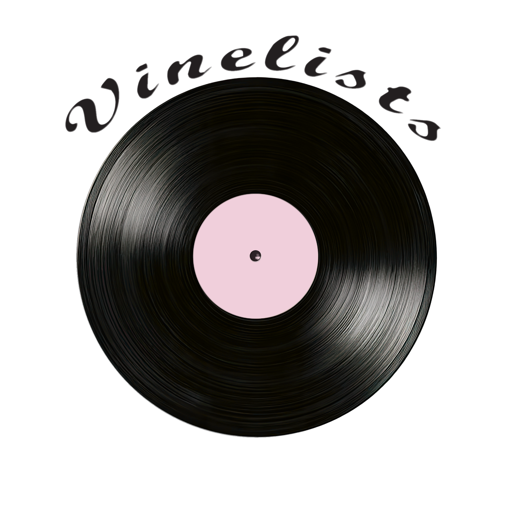

A classified collaboration between the PlanetScope Exploration Division and VineList Audio Systems. Recovering lost planetary frequencies and transforming them into collectible vinyl transmissions.

Mapping the unknown edges of the galaxy since 2089.
PlanetScope is responsible for cataloguing newly discovered worlds, monitoring strange cosmic signals, and documenting unexplained anomalies beyond the mapped sectors.
Long-range drones collect damaged transmissions from abandoned colonies and unidentified planetary systems. Many signals contain distorted voices, music, and impossible frequencies.
Several PlanetScope expeditions have vanished after entering restricted sectors. Public records regarding these missions remain heavily censored.
VineList began as an underground audio preservation company specializing in rare analog recordings. After discovering PlanetScope transmissions hidden within abandoned satellite frequencies, the company partnered with PlanetScope to create collectible vinyl discs based on real recovered signals. Each disc contains encrypted data, planetary audio patterns, and classified mission logs.
Recovered from Drone PS-01 near the Vireon sector.